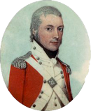
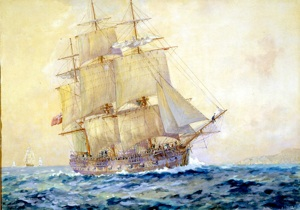

James McManus Snr.

James McManus was born in England about 1770. In 1787 he enlisted as a member of the 59th Portsmouth Company. He joined Captain Watkin Tench’s regiment of the Marine Garrison at Portsmouth, England. He sailed with the First Fleet aboard the Charlotte but was transferred to the Sirius during the voyage. He met Jane Poole initially while a marine with the First Fleet aboard the Charlotte.

On the 26th August 1790 McManus was confined for stealing from a fellow marine. He had been found with a chest containing clothes, food and tobacco belonging to Private Charles McCarty of the NSW Corps. The next morning he tried to commit suicide, but only managed to scar himself. Sergeant James Scott recorded, "McManus Attempted to Cut his owne troght in the Guardhouse but Was prevented by Corporal Begley after Scaring himself in Several places but not Effectually."
McManus said that he had received the items from John Dell, a drummer in the Corps. When tried on 2 October McManus was found not guilty. Sergeant Scott recorded "Acquitted, Alltho it was Sertain he was Guilty. He was cleared, through a flaw in the Evedence" and that, "Since his Confinement, he seems Insane. For Eleven Day McManus took no sort of Victuales Except a few Spoons full of Flour and Water. He is Quite Recovered Again."
From the journal of Private J N Easty, “On the 4th October 1790 James McManis, a marine was tryed by a criminal court for house-breaking but was acquitted.”
He was discharged from the marines in August 1790.
James’s name appears in a list of 29 ex-Marines who sailed for Norfolk Island on board the "Atlantic" on 28th October 1791; he was granted 60 acres of land and supplied with livestock, rations, tools and building materials but his efforts were clearly unsuccessful. James stayed on the island for nearly two years and during this time formed a relationship with Jane Poole who had arrived there on the “Supply” in 1790 and had a daughter, Margaret. He departed Norfolk Island in September 1792 with Jane and Margaret and returned to New South Wales as he ‘didn’t like the life of a settler’. James then became a Private in the N.S.W. Corp on 25th Dec, 1792.
He was granted 65 acres in Mulgrave Place on the Hawkesbury on 10th May 1797 by Governor Hunter (area from Richmond Hill to Pitt Town) and he farmed a further 160 acres. He lived there with Jane Poole with whom he had a daughter Margaret, born on Norfolk Island and 2 sons, James and John born in Sydney Cove upon his return from Norfolk Island.
In a short time McManus died and was buried on 15 April 1798. He was 28 years old.
![What you should know
James McManus was born in England about 1770. He enlisted in the Royal marines at Portsmouth in 1787. He sailed in the First Fleet leaving England aboard the Charlotte and transferring to the Sirius in the course of the voyage. He formed an association with Jane Poole, a convict from the Charlotte, ca. 1791 although no marriage has been found. They settled briefly on Norfolk Island. James returned to New South Wales and joined the NSW Corp. They had a daughter Margaret and 2 sons, James and John. James McManus died in 1798 at 28 years of age. He was buried at St. Phillip’s Sydney on the 15th April 1798. His youngest boy was only 10 months old.](James_McManus_Snr_files/shapeimage_1.png)

Marines getting the stock ashore from the school project The First Fleet and Early Sydney 1788-1810.
Captain Watkin Tench
The Charlotte

The Sirius